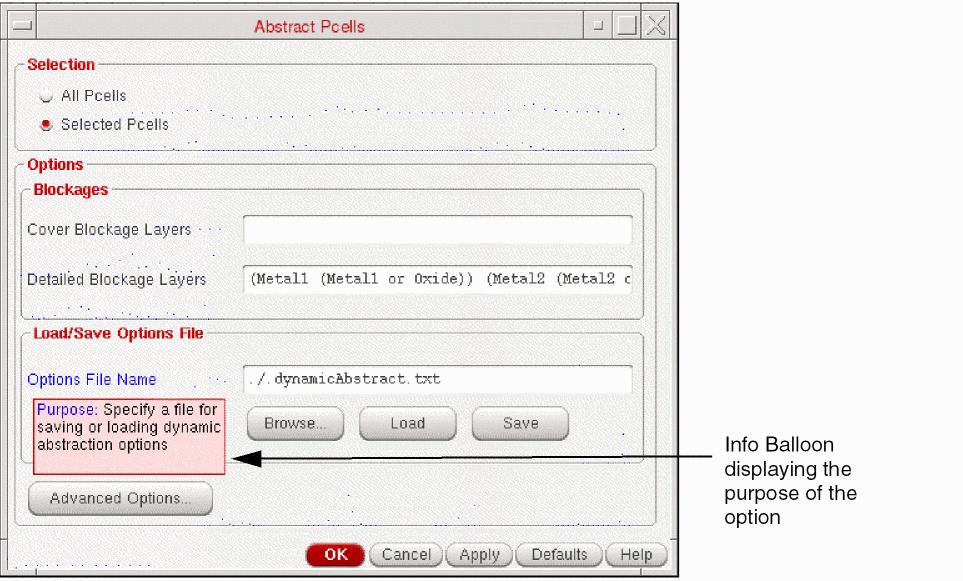

Specifying General Dynamic Abstraction Options
You can specify pin, PR boundary and blockages settings in the General tab of the Save Dynamic Abstract Generation Options form.
To use the general settings in the Save Dynamic Abstract Generation Options form:
-
Choose Tools – Dynamic Abstract Generation For Pcells – Abstract Pcells.
The Abstract Pcells form is displayed.
 -
Click Advanced Options.
The Save Dynamic Abstract Generation options form is displayed as shown in the following figure. The form has three tabs: General, Extraction, and Antenna tab.

-
In the Pins section, you can specify the pin settings.
- Choose Map Text Labels to Pins to specify the text labels that you want to map from the layout view to be created as pins in the layout dual view. This field is case-sensitive.
-
In the Power Pin Names, Ground Pin Names, Clock Pin Names, Analog Pin Names, and Output Pin Names fields, specify a list of names for power pin, ground pin, clock pin, analog pin, and output pin, respectively. Specifying the pin names enables you to distinguish the pin types in the design.
- In the Geometry Search Depth box, specify the hierarchy depth.
- Select the Preserve text labels check box to retain the text labels from the layout view in the layout dual view.
- In the Using geometry on layers field, specify a list of layers or layer purpose pairs to be used to define the prBoundary.
- In the Blockage Spacing Constraint field, specify a list of layer purpose pairs on which you want to define a spacing constraint along with the spacing value.
- Click Close after setting the required fields.
Related Topics
Save Dynamic Abstract Generation Options Form
Return to top